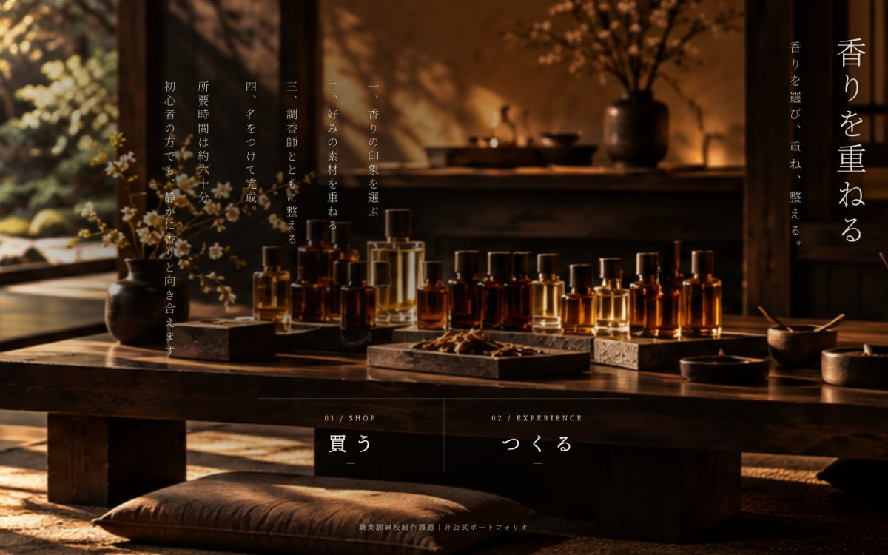
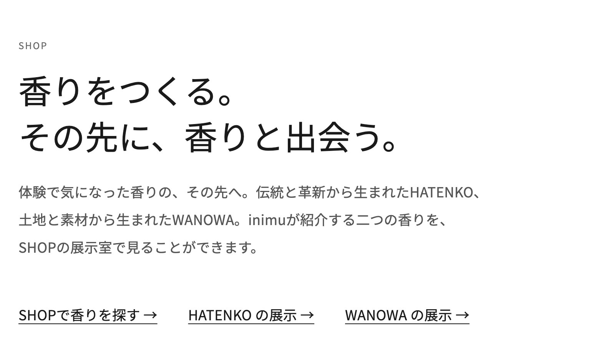

Web Experience Redesign
学習用・企画提案書 FINAL
中間 諭 / 2026.10.01
見た瞬間に、次の一歩がわかる。
読むWebから、見れば分かるWebへ。
情報を増やして読ませるのではなく、目的を分け、迷わず選べる入口をつくる。
企画の思想
顧客が探していたものだけで、
終わらせない。
訪れる目的は、一つではない
inimuを訪れる人は、最初から香りやブランドの思想に興味があるとは限りません。
- 香水を買いたいSHOP
- 何かを体験したいEXPERIENCE
- デートの行き先を探している浅草で過ごす
- 浅草観光の途中浅草で過ごす
- 贈り物を探しているSHOP
目的に応え、その先で出会う
まず、その人の目的に応える。そのうえで、本人がまだ意識していなかった別の選択肢にも気づける体験を設計します。
- 香水を買いに来た人が、自分でつくる体験に興味を持つ。
- ワークショップを探していた人が、HATENKO・WANOWAの商品に興味を持つ。
- 観光やデートの途中の人が、香りという新しい楽しみ方を見つける。
SHOPとEXPERIENCEという2つの入口は、顧客を分類するためではなく、相互発見——買いに来た人が体験に、体験に来た人が商品に気づくこと——を生むためにあります。
課題
伝えたい価値は、十分にある。
ずれているのは、見せる順番。
FACT / OBSERVATION
HATENKOとWANOWAには独立した公式サイトがあり、哲学・背景・素材・ものづくりへの思いを発信しています。inimuにも、商品・体験・素材・地域・職人など、伝えるべき価値が多くあります。
一方で、改訂前のサイトでは、SHOPとEXPERIENCEの間にもう一方へ進む入口が少なく、特にEXPERIENCEから商品へ進む導線はありませんでした。
INSIGHT
ブランドが伝えたいことを最初からすべて見せることと、顧客が知りたいことに応えることは同じではありません。
目的が多様なほど、この順番のずれは、入口での迷いや「探していたものを見つけて終わる」行動につながると考えます。
課題の読み方
情報が足りないのではない。顧客が知りたくなる順番と、もう一つの価値に出会う場所が足りない。
仮説
強烈な第一印象で、inimuの世界へ引き込む。
その後の行動変化は、公開後に確かめる。
最初に、世界へ引き込む
制作途中の初期案では、最初にSHOP / EXPERIENCEを選ぶ2つのドアを検討した。最終案ではそれを廃止し、イントロダクションで強烈な第一印象とブランド体験をつくる。
イントロ後に、2つへ分岐する
イントロダクションの後にSHOP / EXPERIENCEを提示する。世界観を先に見ることで選びやすくなるかは、公開後に検証する仮説として扱う。
押しつけない
ポップアップや強制的な誘導はしない。静かな一行で示し、選ぶのは顧客。
知りたくなった人が、深く進める
展示 → STORY → 公式サイトへ、興味が深まった順に進める。
初期案からの変更はDesign Iteration。イントロダクションの印象・没入感はユーザーテスト等の定性調査で確認し、SHOP / EXPERIENCEへの到達や相互回遊などの行動変化はGA4等で検証します。体験後アンケートは、ワークショップの改善に活用します。
世界観に引き込む。
その先の発見へ。
初期の2ドア案を見直し、イントロダクションで第一印象をつくる。
その後、SHOP / EXPERIENCEへ分岐する。
BEFORE / 旧サイト分析
旧サイトで確認した導線と、そこから想定した行動
旧サイトの画面・導線から確認した事実と、分析上の顧客行動を分けて整理。
- 香水を買いたい見つけた終わり
- 体験を探している予約した終わり
- 観光・デート・贈り物見つけた終わり
THIS PROPOSAL / DESIGN ITERATION
2ドア案を廃止し、イントロダクションの後で発見する
強い第一印象・世界観への没入
実装済み12目的を果たした先の出会い（実装済み・p6）今後
完成したサイト
思想を、画面の位置と
静かな一行で実装する。実装済み掲載はすべて公開中のサイトの画面。番号はp5の図と対応。

映像・情景・テキストで世界観を提示した後、SHOP / EXPERIENCEを表示する。

ブランドを選ばない人は、そのまま香りを探せる。

展示から、商品・STORY・ブランドへ。

「この香りが好きなら、自分だけの香りをつくってみる。」

「香りをつくる。その先に、香りと出会う。」予約の流れは遮らない。
PC・スマートフォン・タブレット、日本語・英語に対応。イントロダクションと分岐の実装を確認済み。演出が行動や理解に与える効果は未検証。公開サイト：jasminbb564bb-cell.github.io/inimu-workshop/
ブランド起点から、
顧客起点へ。
ブランドの思想は削らない。
知りたくなった人が、深く進める順番にする。
ブランドの公式サイトブランドが伝えたい順番
思想から商品へ。その発信は、公式サイトがすでに担っている（p3）。
inimu顧客が知りたくなる順番
- いまの目的
- 展示で見る
- STORYで知る
- 商品・体験を選ぶ
- 公式サイトで深く知る
inimuの役割は、ブランドの情報を繰り返し載せることではなく、
顧客の目的や興味を起点に、商品・体験・ブランドの価値をつなぐこと。
展示室・STORY・公式ストアへのリンクは実装済み実装済み ブランド公式サイトの発信はそのまま尊重し、inimuは入口と順番を担います。
体験後アンケート今後
30秒・4タップ。
記憶になる前の感覚を、すくい上げる。
今の感覚に、一番近い一文字を。
診断するのではなく、
言葉になる前の感覚に、
最初のきっかけをつくる。
相互発見を確かめるために加える問い
今日は、どんな目的で来ましたか。
今日、新しく知った香りやブランドはありますか。
期待効果と検証
成果はまだ測っていない。
だから、確かめる方法を先に決めておく。
DESIGN INTENT設計意図
強烈な第一印象をつくる
イントロダクションでinimuの世界観に引き込み、最初の接点をブランド体験として演出する。
EXPECTED仮説
もう一方のページも見る人が増える
一度の訪問で、SHOPとEXPERIENCEの両方を見る人が増える。
EXPECTED仮説
来た目的と、新しい気づきが分かる
何を目的に来て、何を新しく知ったかを、顧客の言葉で確かめられる。
| 確かめたいこと | 指標 | 現状 |
|---|---|---|
| 1SHOPから来た人が、体験に気づくか | SHOPから入った訪問のEXPERIENCE到達率 展示下・SHOP末尾のEXPERIENCEリンクのクリック | 導線 実装済み計測 今後 |
| 2体験を探す人が、商品に気づくか | EXPERIENCEから入った訪問のSHOP・展示到達率 EXPERIENCE末尾のリンクのクリック | 導線 実装済み計測 今後 |
| 両方に触れたか | 1回の訪問でSHOPとEXPERIENCEの両方を見た割合 | 計測 今後 |
| イントロダクションを見たか | イントロダクション完了率／スキップ率 | 計測 今後 |
| イントロ後に何が起きたか | 完了・スキップ別のSHOP / EXPERIENCE到達率、相互回遊率 | 計測 今後 |
| 何がきっかけか | アンケート「来た目的」「新しく知ったもの」 | アンケート 今後 |
| 押しつけになっていないか | リンク先からすぐ戻る割合 アンケートの自由記述 | 計測 今後 |
予約数・売上、SHOPとEXPERIENCEの間の移動は、まだ実測していません。上の効果はすべて仮説で、数値目標ではなく確かめる対象として扱います。
今後の改善
入口を、もっと多様な目的へ。
APPENDIX / 制作の進行
調査・情報整理 → 情報設計 → ビジュアル・実装 → テスト・改善。工数・費用は、実装範囲と検証内容を確定した段階で見積もる。
APPENDIX / 学習用の簡易再現
会員登録・管理画面・CSV書き出しは、学習用の簡易再現（端末内保存）。実運用では、取得する個人情報を必要最小限にする。
企業が伝えたい順番ではなく、顧客が知りたくなる順番で。